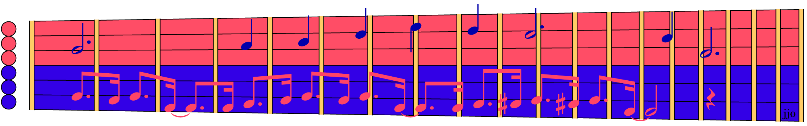

You know counterpoint from music, like in a Bach Invention. And you know Point/Counterpoint from politics, like fifty years ago famously on 60 Minutes and its lampoons on Saturday Night Live. Well this month's sightreading handout* combines both in what is known as a Counterpoint Duet, which is where two counter-melodies expressing different points of view on the same subject are sung together as one piece.
The red and blue sides in this musical debate from 1914 represent (a) simple classical melodies versus (b) the then-radical rhythms of ragtime. Each counter-melody is played separately at first (lyrics are on the back), then, in the original version (and in the youtubes), both are sung together, causing your attention to flick back and forth from one melody to the other.
Because all our sightreading exercises are strictly limited to one note at a time, for easier reading, something has to give. In this case, part A is the simple classical melody, part B is the radical ragtime, and part C interleaves both classical and ragtime, simulating the way your attention tends to follow one or the other. The lyrics for part C are also interleaved for your amusement. May you enjoy both red and blue singing together as one!